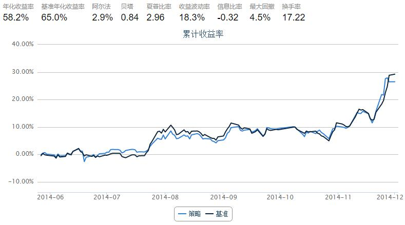

9.1 指数跟踪 · [策略] 指数跟踪低成本建仓策略
指数跟踪
指数追踪通常是指利用某个股票组合复制某一现实指数或者虚拟指数的市场表现，来获取与指数相近的收益，试图最小化跟踪误差。为什么要跟踪指数呢？那要从指数广泛的用途说起：1）很多大型的公募基金都设有专门的指数投资部，通过跟踪特定的指数标的发行ETF、分级基金等产品，以供投资者使用；2）目前在A股市场上做期限套利者通常需要建仓SH50、HS300、ZZ500等指数的现货；3）有些投资者热衷于行业投资，因此其投资标的不是个股而是行业指数；4）近年流行的FOF，是以基金产品作为投资标的，构建基金产品的组合，基金产品也可以认为是代表基金经理投资特定的指数。如果直接购买指数产品有限制或者需要较低成本的建仓指数，那就需要一些策略啦！
通常指数跟踪分为两类：完全复制法和部分复制法。顾名思义，完全复制法即为尽可能完全按照指数的成分股和配比权重来调整组合，使之尽可能的跟踪所选的标的。这种方法对于一般的投资者来讲通常成本和操作难度比较大，这种方法通常仅限于大型公募基金指数部门所使用。部分复制法即为选择某个不同于指数成分股和权重的组合（通常是指数的子集）来尽可能的去跟踪指数。这就需要采用一些优化策略去做选股和配权重。本文参考了文献“Carrier Portfolios.--Steven Kusiak”中的思想，意在研究一种部分复制指数的方法。
Carrier Portfolios
1）模型：
指数本质上是由其成分股按照特定的权重线性组合而成，其成分股张成一个线性空间，每个成分股的权重即相当于指数在每个维度上的长度。我们希望从这个线性空间中找到一个子空间，并根据子空间的基去配以合适的权重，使得配比后的结果能够最大程度上的模拟原指数，思想就是主成分分析（PCA）。将其建模成一个优化问题，假设我们构建的资产组合为P = {w1,w2,...,wN},wi表示给于第i各成分股的权重。优化的目标便是使得P中权重的1范数的和∑|wi|,i = 1,2,3,...,N最小，其含义就是令投资组合的建仓成本达到尽可能小。如果我们只允许做多，那么问题便可以变成更为简单的使∑wi最小。然而如何保证让构建的P尽可能的跟踪指数走势呢？我们可以做这样一个简单合理的假设：如果P在过去一段时间窗口T日中能够拟合指数的走势（体现在收益率的一致性），那么P就能下一次调仓前跟踪指数的走势。如果令r(i,t)表示第i个成分股在t日的收益率，R(t)表示待跟踪的标的指数在t日的收益率，那么：∑r(i,t)*wi = R(t),t = 1,2,3,...,T.那么我们要建模的优化问题便是：
min ∑wi, i = 1,2,3,...,N
s.t. ∑r(i,t)*wi = R(t), t = 1,2,3,...,T
wi >= 0
2）分析：
- ①若
N > T: 约束条件为欠定方程组，解空间会有无数的解。我们需要通过迭代运算从解空间中寻找满足优化目标的最优解，通常在边界取到； - ②若
N = T: 有唯一解，不具备优化的空间； - ③若
N < T: 约束条件为超定方程组，解空间无解（假设曲线每天的走势是不相关的）
3）求解：
通过分析我们知道应该在N > T的条件下去做优化，具体的步骤为：
- ①：不等式约束
wi >= 0可通过添加log barrier惩罚项将其约束到优化目标中:min∑wi-u*log(wi) - ②：可利用原对偶内点法去求解目标函数，算法原理可参考文献“Primal-Dual Interior Point algorithms for Linear Programming--George Tzallas-Regas”
- ③：依据②中求得的权重去配指数。由于近似最优解一般在边界上取到，因此必然最优
w是一个降维后的结果，即有些成分股的权重配比小到无法操作，舍去即可
策略回测
1）策略目标
以上证50为例，我们希望选取部分上证50的成分股并配以一定的优化后的权重构建投资组合 P = {w1,w2,...,w50}，让P可以有效的跟踪上证50的走势，并且尽可能的选用部分成分股去构建组合。
2）仿真环境
- ①跟踪标的：上证50
- ②股票池：上证50成分股
- ③调仓：5天（由于只是研究策略，因此假设每次调仓都用新得的股票替换掉原有的，实际做的时候并不需要这样，只要交易当前组合和原组合的差额即可）
from CAL.PyCAL import *
import numpy as np
import copy as cp
start = '2014-05-01' # 回测起始时间
end = '2014-12-01' # 回测结束时间
benchmark = 'SH50' # 策略参考标准
universe = set_universe('SH50') # 证券池，支持股票和基金
capital_base = 100000 # 起始资金
freq = 'd' # 策略类型，'d'表示日间策略使用日线回测，'m'表示日内策略使用分钟线回测
refresh_rate = 5 # 调仓频率，表示执行handle_data的时间间隔，若freq = 'd'时间间隔的单位为交易日，若freq = 'm'时间间隔为分钟
def initialize(account): # 初始化虚拟账户状态
account.portfolioNumList = []
pass
def dict2list(dictionary):
tmplist = []
for index in dictionary:
tmplist.append(dictionary[index])
return tmplist
def handle_data(account): # 每个交易日的买入卖出指令
histLength = 15
stockLength = len(account.universe)
####get the return rate of the universe
closePrice = account.get_attribute_history('closePrice',histLength+1)
uniRetList = []
for index in closePrice:
uniRetList.append(((closePrice[index][1:]-closePrice[index][:-1])/closePrice[index][:-1]).tolist())
uniRetMat = np.mat(uniRetList).T
####get the return rate of the benchmark
calendar = Calendar('China.SSE')
startDate = calendar.advanceDate(account.current_date,'-'+str(histLength+1)+'B').toDateTime()
endDate = calendar.advanceDate(account.current_date,'-1B').toDateTime()
benchmark = DataAPI.MktIdxdGet(ticker = "000016",
field = "closeIndex",
beginDate = startDate,
endDate = endDate,pandas = '1')
bmClose = benchmark['closeIndex'].tolist()
bmRet = []
for index in range(len(bmClose)-1):
bmRet.append((bmClose[1:][index]-bmClose[:-1][index])/bmClose[:-1][index])
bmRetMat = np.mat(bmRet)
####initialization: constant
##ones: stockLength
ones = np.ones(stockLength)
##unitMat: stockLength * stockLength
unitMat = np.diag(ones)
##zeros: histLength
zeros = np.zeros(histLength)
##zero: stockLength
zero = np.zeros(stockLength)
##zeroMatMid: histLength * histLength
zeroMatMid = np.diag(zeros)
##zeroMat: stockLength * stockLength
zeroMat = np.diag(zero)
##zeroMatRes: histLength * stockLength
zeroMatRes = np.zeros((histLength,stockLength))
##initialization: variables
##w: stockLength
# w = np.ones(stockLength)/(stockLength)
w = np.ones(stockLength)/(stockLength)
##wmat: stockLength * stockLength
wMat = np.diag(w)
##u: histLength
u = np.ones(histLength)/histLength
##uMat: histLength * histLength
uMat = np.diag(u)
##v: stockLength
v = np.ones(stockLength)/(stockLength)
##vMat: stockLength * stockLength
vMat = np.diag(v)
##R: histLength * stockLength
R = uniRetMat
##Q: histLength * stockLength
Q = R
##splMat: (stockLength + histLength + stockLength) * (stockLength + histLength + stockLength)
splMatTmp1 = np.hstack([zeroMat,Q.T,unitMat])
splMatTmp2 = np.hstack([Q,zeroMatMid,zeroMatRes])
splMatTmp3 = np.hstack([vMat,zeroMatRes.T,wMat])
splMatTmp = np.vstack([splMatTmp1,splMatTmp2,splMatTmp3])
splMat = splMatTmp
##mulVec: length = stockLength + histLength + stockLength
firstCol = np.subtract(ones,np.dot(Q.T,u))
firstCol = np.subtract(firstCol,v)
secondCol = np.subtract(bmRetMat,np.dot(Q,w))
thirdCol = np.mat(np.subtract(np.dot(0.1,ones),np.dot(wMat,v)))
mulVec = np.hstack([firstCol,secondCol,thirdCol])
####algorithm iteration part
d = 1
mu = 0.1
itera = 0
while itera < 300:
# while d > 0.01:
##calculate the dirtaw, dirtau, dirtav
temp = np.dot(splMat.I,mulVec.T).tolist()
dirtaw = [index[0] for index in temp[:stockLength]]
dirtau = [index[0] for index in temp[stockLength:stockLength+histLength]]
dirtav = [index[0] for index in temp[stockLength+histLength:]]
##update the vector w, u, v and the matrix wmat, umat, vmat
w = np.add(w,dirtaw)
u = np.add(u,dirtau)
v = np.add(v,dirtav)
wMat = np.diag(w)
uMat = np.diag(u)
vMat = np.diag(v)
##init the matrix splmat: (stockLength + histLength + stockLength) * (stockLength + histLength + stockLength)
splMatTmp1 = np.hstack([zeroMat,Q.T,unitMat])
splMatTmp2 = np.hstack([Q,zeroMatMid,zeroMatRes])
splMatTmp3 = np.hstack([vMat,zeroMatRes.T,wMat])
splMatTmp = np.vstack([splMatTmp1,splMatTmp2,splMatTmp3])
splMat = splMatTmp
##init the vector mulvec: length = stockLength + histLength + stockLength
firstCol = np.subtract(ones,np.dot(Q.T,u))
firstCol = np.subtract(firstCol,v)
secondCol = np.subtract(bmRetMat,np.dot(Q,w))
thirdCol = np.mat(np.subtract(np.dot(mu,ones),np.dot(wMat,v)))
##calculate the iteration condition variable d
tmp1 = 0
for index in dirtaw:
tmp1 += index**2
tmp2 = 0
for index in dirtau:
tmp2 += index**2
d = tmp1 + tmp2
##update the itera and mu
itera += 1
mu = mu*(1-stockLength**(-0.5))**5
##weight of the components
weight = w
for index in range(stockLength):
if weight[index]<0:
weight[index] = 0
weightSum = np.sum(weight)
weightReg = [index/weightSum for index in weight]
for index in range(stockLength):
if weightReg[index]<10*10**(-3):
weightReg[index] = 0
count = 0
for index in weightReg:
if index != 0:
count += 1
account.portfolioNumList.append({account.current_date:count})
##Sell portfolio
for index in account.valid_secpos:
order_to(index,0)
####Buy portfolio
portfolio = []
for index in range(stockLength):
amount = round(100*weightReg[index])*100
if amount != 0:
portfolio.append({account.universe[index]:amount})
# amount = account.cash*weightReg[index]/account.referencePrice[account.universe[index]]
order(account.universe[index],amount)
print 'The portfolio at '+str(account.current_date) + ' has ' + str(len(portfolio)) + ' stocks, which '
print portfolio

The portfolio at 2014-05-27 00:00:00 has 15 stocks, which
[{'601601.XSHG': 500.0}, {'600111.XSHG': 100.0}, {'600018.XSHG': 500.0}, {'600519.XSHG': 1400.0}, {'601668.XSHG': 100.0}, {'601088.XSHG': 1500.0}, {'601998.XSHG': 500.0}, {'600010.XSHG': 500.0}, {'600637.XSHG': 500.0}, {'600999.XSHG': 300.0}, {'600887.XSHG': 1100.0}, {'601169.XSHG': 1300.0}, {'601988.XSHG': 200.0}, {'601318.XSHG': 900.0}, {'601901.XSHG': 100.0}]
The portfolio at 2014-06-04 00:00:00 has 11 stocks, which
[{'600583.XSHG': 500.0}, {'600893.XSHG': 300.0}, {'601288.XSHG': 1700.0}, {'600585.XSHG': 700.0}, {'600256.XSHG': 500.0}, {'601800.XSHG': 800.0}, {'601989.XSHG': 100.0}, {'600887.XSHG': 800.0}, {'601398.XSHG': 3400.0}, {'600030.XSHG': 500.0}, {'600150.XSHG': 800.0}]
The portfolio at 2014-06-11 00:00:00 has 15 stocks, which
[{'601601.XSHG': 600.0}, {'600893.XSHG': 300.0}, {'600111.XSHG': 100.0}, {'600018.XSHG': 400.0}, {'601390.XSHG': 1500.0}, {'601288.XSHG': 800.0}, {'601668.XSHG': 700.0}, {'601818.XSHG': 500.0}, {'600690.XSHG': 1400.0}, {'600010.XSHG': 700.0}, {'600999.XSHG': 500.0}, {'601628.XSHG': 200.0}, {'600887.XSHG': 400.0}, {'601766.XSHG': 400.0}, {'600030.XSHG': 1400.0}]
The portfolio at 2014-06-18 00:00:00 has 7 stocks, which
[{'600036.XSHG': 100.0}, {'600018.XSHG': 300.0}, {'600256.XSHG': 500.0}, {'600406.XSHG': 7600.0}, {'600048.XSHG': 400.0}, {'600887.XSHG': 200.0}, {'600030.XSHG': 900.0}]
The portfolio at 2014-06-25 00:00:00 has 7 stocks, which
[{'600050.XSHG': 1200.0}, {'600089.XSHG': 900.0}, {'600256.XSHG': 900.0}, {'600104.XSHG': 1500.0}, {'601989.XSHG': 2000.0}, {'600837.XSHG': 1000.0}, {'601398.XSHG': 2200.0}]
The portfolio at 2014-07-02 00:00:00 has 9 stocks, which
[{'600036.XSHG': 800.0}, {'601390.XSHG': 1900.0}, {'600016.XSHG': 200.0}, {'601006.XSHG': 600.0}, {'601088.XSHG': 300.0}, {'600585.XSHG': 1300.0}, {'600690.XSHG': 1300.0}, {'601988.XSHG': 2900.0}, {'601186.XSHG': 500.0}]
The portfolio at 2014-07-09 00:00:00 has 8 stocks, which
[{'601288.XSHG': 2100.0}, {'601668.XSHG': 400.0}, {'601088.XSHG': 2100.0}, {'600089.XSHG': 1400.0}, {'600690.XSHG': 900.0}, {'600010.XSHG': 1400.0}, {'601988.XSHG': 1100.0}, {'601398.XSHG': 400.0}]
The portfolio at 2014-07-16 00:00:00 has 6 stocks, which
[{'600583.XSHG': 1400.0}, {'601006.XSHG': 1400.0}, {'600256.XSHG': 500.0}, {'601998.XSHG': 1700.0}, {'600048.XSHG': 400.0}, {'600518.XSHG': 4400.0}]
The portfolio at 2014-07-23 00:00:00 has 23 stocks, which
[{'600583.XSHG': 200.0}, {'601601.XSHG': 700.0}, {'600036.XSHG': 400.0}, {'600018.XSHG': 300.0}, {'600519.XSHG': 100.0}, {'601390.XSHG': 1400.0}, {'601288.XSHG': 200.0}, {'601006.XSHG': 300.0}, {'601088.XSHG': 500.0}, {'600256.XSHG': 500.0}, {'601998.XSHG': 100.0}, {'600015.XSHG': 100.0}, {'600028.XSHG': 500.0}, {'600010.XSHG': 300.0}, {'600999.XSHG': 400.0}, {'600109.XSHG': 100.0}, {'601989.XSHG': 1100.0}, {'600887.XSHG': 200.0}, {'601766.XSHG': 200.0}, {'601169.XSHG': 700.0}, {'601988.XSHG': 1100.0}, {'600030.XSHG': 200.0}, {'601901.XSHG': 300.0}]
The portfolio at 2014-07-30 00:00:00 has 8 stocks, which
[{'600893.XSHG': 200.0}, {'600104.XSHG': 300.0}, {'600015.XSHG': 100.0}, {'601989.XSHG': 600.0}, {'600518.XSHG': 800.0}, {'601628.XSHG': 2000.0}, {'600887.XSHG': 300.0}, {'601318.XSHG': 5400.0}]
The portfolio at 2014-08-06 00:00:00 has 7 stocks, which
[{'601328.XSHG': 2800.0}, {'600036.XSHG': 600.0}, {'600111.XSHG': 1200.0}, {'601088.XSHG': 700.0}, {'601800.XSHG': 1300.0}, {'600028.XSHG': 1900.0}, {'600518.XSHG': 1100.0}]
The portfolio at 2014-08-13 00:00:00 has 7 stocks, which
[{'601601.XSHG': 1400.0}, {'600018.XSHG': 100.0}, {'601818.XSHG': 600.0}, {'601088.XSHG': 2100.0}, {'600406.XSHG': 1600.0}, {'600999.XSHG': 2900.0}, {'600887.XSHG': 1300.0}]
The portfolio at 2014-08-20 00:00:00 has 6 stocks, which
[{'600000.XSHG': 1900.0}, {'600111.XSHG': 900.0}, {'600016.XSHG': 1600.0}, {'600690.XSHG': 300.0}, {'600150.XSHG': 100.0}, {'601186.XSHG': 5100.0}]
The portfolio at 2014-08-27 00:00:00 has 8 stocks, which
[{'601328.XSHG': 2000.0}, {'600585.XSHG': 300.0}, {'600048.XSHG': 1300.0}, {'601800.XSHG': 1200.0}, {'600690.XSHG': 700.0}, {'600028.XSHG': 1400.0}, {'601989.XSHG': 1200.0}, {'601988.XSHG': 1800.0}]
The portfolio at 2014-09-03 00:00:00 has 8 stocks, which
[{'600016.XSHG': 2200.0}, {'601818.XSHG': 1100.0}, {'600585.XSHG': 2500.0}, {'600089.XSHG': 2000.0}, {'600048.XSHG': 400.0}, {'600104.XSHG': 1100.0}, {'600518.XSHG': 500.0}, {'600150.XSHG': 200.0}]
The portfolio at 2014-09-11 00:00:00 has 7 stocks, which
[{'601857.XSHG': 4300.0}, {'601088.XSHG': 700.0}, {'600048.XSHG': 1000.0}, {'600690.XSHG': 600.0}, {'600518.XSHG': 1000.0}, {'601169.XSHG': 800.0}, {'601901.XSHG': 1400.0}]
The portfolio at 2014-09-18 00:00:00 has 8 stocks, which
[{'601328.XSHG': 1700.0}, {'600111.XSHG': 500.0}, {'600016.XSHG': 3100.0}, {'600015.XSHG': 300.0}, {'600887.XSHG': 400.0}, {'600030.XSHG': 1800.0}, {'601186.XSHG': 600.0}, {'601318.XSHG': 1700.0}]
The portfolio at 2014-09-25 00:00:00 has 11 stocks, which
[{'600050.XSHG': 600.0}, {'600583.XSHG': 700.0}, {'600111.XSHG': 3000.0}, {'600048.XSHG': 500.0}, {'600015.XSHG': 300.0}, {'600028.XSHG': 400.0}, {'600837.XSHG': 1400.0}, {'601169.XSHG': 100.0}, {'601988.XSHG': 600.0}, {'601186.XSHG': 100.0}, {'601901.XSHG': 1700.0}]
The portfolio at 2014-10-09 00:00:00 has 9 stocks, which
[{'600519.XSHG': 1400.0}, {'600585.XSHG': 3000.0}, {'600256.XSHG': 300.0}, {'600048.XSHG': 2500.0}, {'600104.XSHG': 900.0}, {'600015.XSHG': 600.0}, {'600999.XSHG': 300.0}, {'600109.XSHG': 600.0}, {'600887.XSHG': 100.0}]
The portfolio at 2014-10-16 00:00:00 has 8 stocks, which
[{'600519.XSHG': 800.0}, {'601166.XSHG': 6900.0}, {'600104.XSHG': 700.0}, {'600010.XSHG': 200.0}, {'600999.XSHG': 200.0}, {'601766.XSHG': 700.0}, {'601169.XSHG': 100.0}, {'600030.XSHG': 100.0}]
The portfolio at 2014-10-23 00:00:00 has 7 stocks, which
[{'601390.XSHG': 400.0}, {'601668.XSHG': 1100.0}, {'600048.XSHG': 1100.0}, {'600104.XSHG': 200.0}, {'600837.XSHG': 4000.0}, {'601398.XSHG': 2200.0}, {'601318.XSHG': 800.0}]
The portfolio at 2014-10-30 00:00:00 has 6 stocks, which
[{'601857.XSHG': 800.0}, {'600256.XSHG': 600.0}, {'600015.XSHG': 200.0}, {'600887.XSHG': 100.0}, {'601398.XSHG': 7600.0}, {'600030.XSHG': 500.0}]
The portfolio at 2014-11-06 00:00:00 has 8 stocks, which
[{'601328.XSHG': 4800.0}, {'600519.XSHG': 1000.0}, {'601818.XSHG': 800.0}, {'601088.XSHG': 900.0}, {'600585.XSHG': 600.0}, {'600406.XSHG': 900.0}, {'600104.XSHG': 500.0}, {'601901.XSHG': 400.0}]
The portfolio at 2014-11-13 00:00:00 has 7 stocks, which
[{'600583.XSHG': 1300.0}, {'601601.XSHG': 2400.0}, {'600893.XSHG': 400.0}, {'601818.XSHG': 1500.0}, {'600104.XSHG': 1700.0}, {'600109.XSHG': 200.0}, {'601318.XSHG': 2300.0}]
The portfolio at 2014-11-20 00:00:00 has 9 stocks, which
[{'601601.XSHG': 3800.0}, {'600018.XSHG': 300.0}, {'601006.XSHG': 600.0}, {'600089.XSHG': 1300.0}, {'601998.XSHG': 800.0}, {'600015.XSHG': 1300.0}, {'600010.XSHG': 300.0}, {'601989.XSHG': 300.0}, {'601988.XSHG': 1200.0}]
The portfolio at 2014-11-27 00:00:00 has 14 stocks, which
[{'601601.XSHG': 400.0}, {'600893.XSHG': 1700.0}, {'600111.XSHG': 600.0}, {'600519.XSHG': 300.0}, {'601288.XSHG': 800.0}, {'601088.XSHG': 100.0}, {'600585.XSHG': 1800.0}, {'600089.XSHG': 500.0}, {'600015.XSHG': 500.0}, {'600999.XSHG': 200.0}, {'600109.XSHG': 600.0}, {'600518.XSHG': 300.0}, {'601988.XSHG': 1900.0}, {'601318.XSHG': 100.0}]
回测结果
从上面的回测结果中我们可以看到，每个时点的持仓个股数在7-15只的范围内，然而组合依然可以较好的跟踪标的上证50指数。跟踪误差没有详细去计算，应该在400bps（4%）以内，考虑到大大减少了建仓的难度和成本，因此这个跟踪误差是可以接受的。
思考
- ① 考虑到我们上面仅仅回测了最简单的model，事实上我们完全可以在上面的优化问题中加入更多的限制条件，以获得更为进准的匹配效果。例如，如果我们限制了每只股票的持仓不得高于某个比例，则可以将条件
wi >= 0改为xi >= wi >=0。如果考虑可以融券做空，则优化目标变为min ∑|wi|。如果考虑加入仓位限制，例如仓位控制在70%以上，则可加入∑wi > 70%，等等。 - ② 该模型可以在一定程度上挖掘任意指数、股票型基金曲线的持仓信息。以基金为例：只要是股票型基金，尤其是该基金的投资标的池已知，例如基金嘉实大盘研究精选的标的池很有可能就是HS300，那么便可以用HS300去跟踪该基金，得到的股票组合很有可能就是嘉实大盘研究精选的持仓。